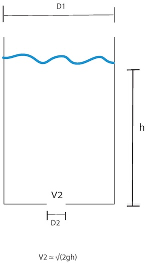

5.2. Separable differential equations#
For example, to solve \(y' = xy\), separate the variables and integrate:
Note that here, we are being careful to denote the redefinition of the integration constant (\(c = e^{c_0}\)). This detail may be glossed over at times.
Example: Chemical reaction kinetics
A substance is disappearing according to a first-order reaction, so its concentration follows
where \(k\) is the reaction rate constant. If the initial concentration of the reactant was 1.0 M and the concentration after 1 hour has passed is 0.70 M, what is the reaction rate constant?
First, solve the differential equation using separation of variables
where B is an unknown integration constant. Apply the initial condition that \(c(0) = 1\)
Hence,
We know that \(c(1) = 0.70\) so
Example: Newton’s law of cooling
Estimate the temperature T in an office building at 6 a.m. if the heat goes off at 10 p.m. when the building is 70°F and the outside temperature \(T_\infty\) is 45°F if the T follows
where \(k = 0.05\,{\rm h}^{-1}\).
Separate the differential equation and integrate
Call 10 p.m. the time where \(t = 0\). Then,
Last, evaluate the temperature at 6 a.m. when \(t = 8\):
The temperature is approximately 62°F.
Example: Toricelli’s Law
A 1 cm hole opens at the bottom of a 1 m cylindrical tank. Water exits the hole with velocity that follows Toricelli’s, \(\sqrt{2gh}\) where g is the acceleration due to gravity and g is the height of water above the hole.
{kind=link}
If there is 2 m of water in the tank initially, when does it drain?
Start from the unsteady balance on the mass of water m in the tank
The mass of water is
where \(\rho\) is the density of water, V is the volume of water in the tank, and \(D_1\) = 1 m is the diameter of the tank. V is replaced using the volume of a cylinder.
The mass flow rate out is
where \(\dot V\) is the volumetric flow rate out of the hole, which we compute from the cross-sectional area of the hole (a circle with diameter \(D_2\) = 0.01 m) and the model for the velocity leaving it.
Inserting both into the unsteady balance, applying rules of differentiation, and simplifying gives
This is a separable differential equation
Find the integration constant c using the initial condition
The tank drains when \(h = 0\), so substitute this, c, and numerical values:
This time is in seconds because all units are SI, so the tank drains in about 1.8 hours.
5.2.1. Skill builder problems#
Solve the following:
\(y'+(x+2)y^2 = 0, \quad y(1) = 1\)
Solution
Separate and integrate:
(5.28)#\[\begin{align} \dd{}{y}{x} &= -(x+2)y^2 \\ \int\frac{\d{y}}{y^2} &= -\int (x+2) \d{x} \\ -\frac{1}{y} &= -\left(\frac{x^2}{2} + 2x\right) + c \end{align}\]Apply initial condition \(y(1) = 1\):
(5.29)#\[\begin{equation} -1 = -\left(\frac{1}{2} + 2 \right) + c \end{equation}\]so \(c = 3/2\). Hence,
(5.30)#\[\begin{equation} y = \frac{2}{x^2+4x-3} \end{equation}\]\(yy'+4x = 0, \quad y(0) = 3\)
Solution
Separate and integrate:
(5.31)#\[\begin{align} y \frac{dy}{dx} &= -4x \\ \int y \d{y} &= \int-4x \d{x} \\ -\frac{y^2}{2} &= -2x^2 + c \\ \end{align}\]Apply initial condition \(y(0) = 3\):
(5.32)#\[\begin{equation} -\frac{9}{2} = c \end{equation}\]so
(5.33)#\[\begin{align} y^2 &= 9-4x^2 \\ y &= \pm \sqrt{9-4x^2} \end{align}\]The negative root does not satisfy the initial condition, so choose the positive root:
(5.34)#\[\begin{equation} y = \sqrt{9-4x^2} \end{equation}\]\(\displaystyle y' = \frac{x-1}{y}e^{-y^2}, \quad y(0) = 1\)
Solution
Separate and integrate:
(5.35)#\[\begin{align} \int y e^{y^2} \d{y} &= \int (x-1) \d{x} \\ \frac{1}{2} e^{y^2} &= \frac{x^2}{2} - x + c \end{align}\]Apply initial condition \(y(0) = 1\):
(5.36)#\[\begin{equation} \frac{1}{2} e = c \end{equation}\]Hence,
(5.37)#\[\begin{align} e^{y^2} &= x^2 - 2x + e \\ y^2 &= \ln(x^2 - 2x + e) \\ y &= \pm \sqrt{\ln(x^2 - 2x + e)} \end{align}\]The negative root again does not meet the initial condition, so choose the positive one:
(5.38)#\[\begin{equation} y = \sqrt{\ln(x^2 - 2x + e)} \end{equation}\]